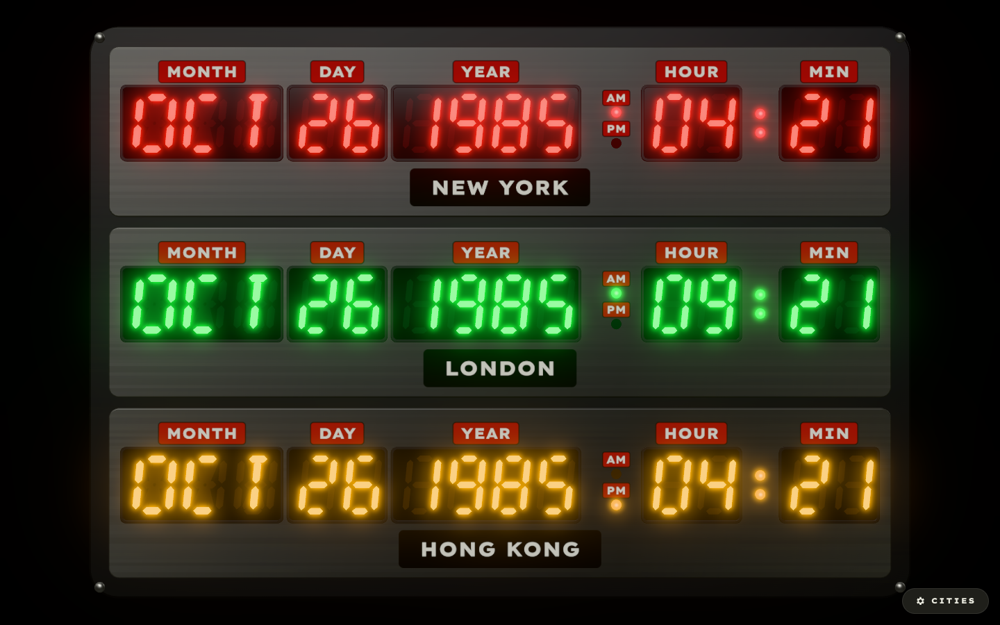

How the SwiftUI clock became a three.js page in one session

The starting point was the iOS and macOS app: SwiftUI shapes for the segments, a 40-city catalog, three colour-coded rows, and a colon phase-locked to the wall clock. Its CLAUDE.md already described every constant, so the port could be faithful by construction rather than by eye.
Some decisions would change the whole shape of the project, so they came first:
Everything that isn't pixels moved to js/models and js/services, with no DOM and no three.js, so Node's built-in test runner can exercise it directly:
segmentMaps.js: the 7- and 14-segment bitmask tables, including the A, S and V fixes the app made during its own development.segmentGeometry.js: a line-for-line port of SegmentShapes.swift. It produces six-point beveled hexagons, with italic skew applied per point using the full character height.layout.js: the SwiftUI HStack arithmetic, reproduced in "natural points". One test pins the row width to the Swift value, 358.52pt.timeReadout.js: Intl.DateTimeFormat with hourCycle: 'h23', cached per zone. Unknown zones fall back to UTC, like the app's ?? .gmt.cityStore.js: the same storage key, cap and semantics, with Storage injected so tests use an in-memory map.All 35 Swift tests were ported, plus 18 more that cover DST, URL parsing, geometry and corrupt storage: 53 in total, run with node --test and no dependencies.
The scene uses the layout numbers directly as world units. The enclosure and panels are extruded rounded rectangles with procedural brushed-metal canvas textures. Each field gets a gel plane, an extruded bezel, a glass sheet and a canvas-drawn DYMO caption. All ghost segments in a row are merged into one ShapeGeometry.
Two causes, two fixes:
UnrealBloomPass blends five mips with weights [1, .8, .6, .4, .2], and even with radius: 0 the 1/16 and 1/32 mips smear light across the screen. Overriding them to [0.7, 0.4, 0.12, 0.02, 0] keeps the glow tight, like the app's stacked 2/5/11pt shadows.The app draws pale litCore segments with saturated bloom-coloured shadows. In a single-pass bloom, a pale core would give a pale glow. The trick is to use the saturated lit colour at HDR intensity:
// Neutral tone mapping desaturates the hot core towards white (litCore),
// while the bloom keeps the full row colour (the bloom shadows).
lit: new THREE.MeshBasicMaterial({ color: hdr(color.lit, LED_LUMINANCE) })
Because the render target is half-float, colours above 1.0 survive to the bloom pass. Everything that isn't an LED stays under the 0.8 threshold, so bloom is selective without layers or a second render.
A clock that changes twice a second doesn't need a 60 Hz loop. The final timing model:
setTimeout lands on every wall-clock half-second, flips the colon, and recomputes readouts only when the minute changes.requestRender() coalesces into a single rAF.(kind, mask) glyph geometry, with no allocation per tick.The result is two frames per second at rest, which matters on a phone left on a desk as a clock.
Settings is a native <dialog>, which gives focus trapping, Esc and the backdrop for free. Up and down buttons replace SwiftUI's drag handles so reordering works from the keyboard and with screen readers, and each row shows its LED colour and the city's local time. Search covers names and IANA zones, and adding is disabled at three cities.
The first version also tilted the panel towards the mouse, or with the phone's gyro. Step 7 explains why that went.
As in the app's -frozendate workflow, the URL parameters make screenshots reproducible:
?frozendate=1985-10-26T01:21:00-07:00 ?frozendate=2015-10-21T16:29:00-07:00&cities=hill_valley,london,tokyo
Playwright drove Chromium with SwiftShader (--use-angle=swiftshader). It served three.js locally by intercepting the CDN URL, and it checked add, remove, reorder, persistence across reload, the empty state and reset, with no console errors. One gotcha appeared along the way: URLSearchParams turns the + in +01:00 into a space, so the parser now restores it, and a test covers that.
With the site live on GitHub Pages, the first real-device feedback came in:
Removing the tilt was simple. tilt.js and ?notilt went away, and the render loop no longer needs to ease anything, so it renders exactly once per change.
The fuzziness was only partly the bloom setting. The root cause was the Step 3 trick itself. To let a brightness threshold separate the LEDs from the grey chrome text, the segments had to be driven far above 1.0. The tone mapper then bleached their cores, and the bloom spread that extra energy into a blur.
The fix was to stop over-driving the digits and draw the glow separately:
litCore colour, with nothing above 1.0, so they stay crisp.bloom colour, on a layer only the glow render sees.UnrealBloomPass, and added over the main image. The pass's internal renderTargetsHorizontal[0] holds the halo without the source, so the cores aren't doubled.This mirrors how the SwiftUI app does it: a pale fill with coloured .shadow layers underneath. A side-by-side crop against the app's own screenshot now matches closely.